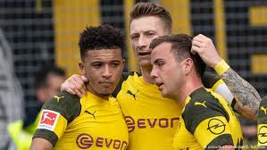

borussia dortmund

- 
NAME
borussia dortmund
NICKNAME
bees
COUNTRY
germany
CITY
dortmund
LEAGUE
bundesliga
Ballspielverein Borussia 09 e.V. Dortmund, commonly known as Borussia Dortmund [bo???si?a? ?d???tm?nt],[3] BVB, or simply Dortmund, is a German professional sports club based in Dortmund, North Rhine-Westphalia. It is best known for its men's professional football team, which plays in the Bundesliga, the top tier of the German football league system. The club have won eight league championships, four DFB-Pokals, one UEFA Champions League, one Intercontinental Cup, and one UEFA Cup Winners' Cup.
Borussia Dortmund's colours are black and yellow, giving the club its nickname die Schwarzgelben.[6][7] The club has active departments in other sports, namely in women's handball, and hold a long-standing rivalry with Ruhr neighbours Schalke 04, known as the Revierderby. They also compete in Der Klassiker with fellow German club, Bayern Munich.
In terms of Deloitte's annual Football Money League, Dortmund was ranked as the second richest sports club in Germany, and the 12th richest football team in the world.[8] Moreover, under the directorship of Michael Zorc in the 2010s, Dortmund have cultivated a reputation for spotting and developing young talent, and have remained focused on developing a youth system.[9] They have also received plaudits for generally adhering to an attacking footballing philosophy.
Founded in 1909 by eighteen football players from Dortmund, the football team is part of a large membership-based sports club with more than 145,000 members,[4] making Borussia Dortmund the second largest sports club by membership in Germany. Since 1974, Dortmund have played their home games at Westfalenstadion; the stadium is the largest in Germany, and Dortmund has the highest average attendance of any association football club in the world